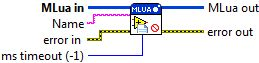

Connector Pane

Remove Module
Removes a MLua module from the provided MLua instance. Before the removal, the "__remove" command is issued which provides it with the option to return a Lua script. This script gets executed before the module is removed from the module list.
Parameter(s)
-----------------
- MLua in: Reference to the MLua instance.
- Name: The name of the MLua module to be removed.
- ms timeout (-1): The time to wait for the MLua reference to become available. A value of '-1' specifies an infinite timeout.
- error in: Describes error conditions that occur before this VI runs. This input provides standard error in functionality.
- MLua out: Reference to the MLua instance.
- error out: Contains error information. This output provides standard error out functionality.